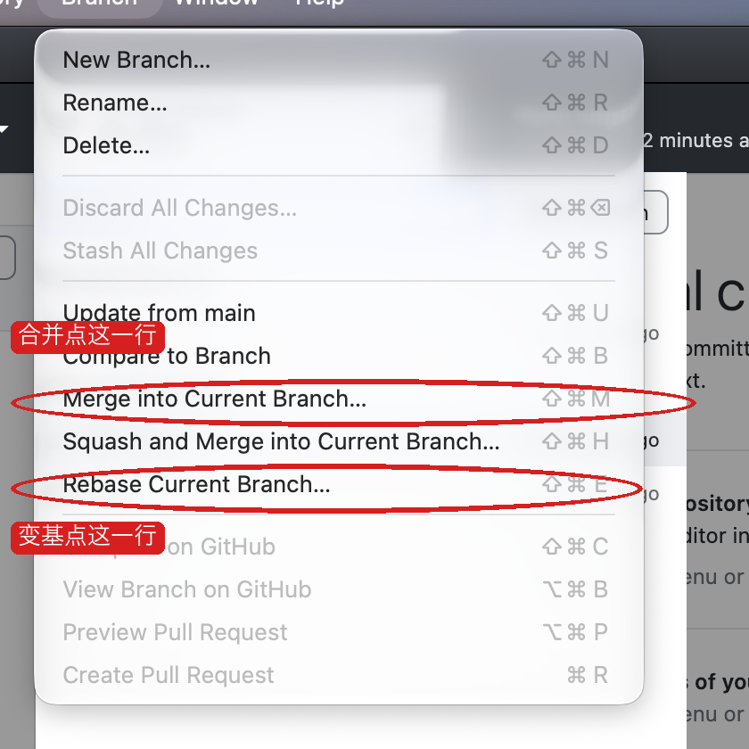
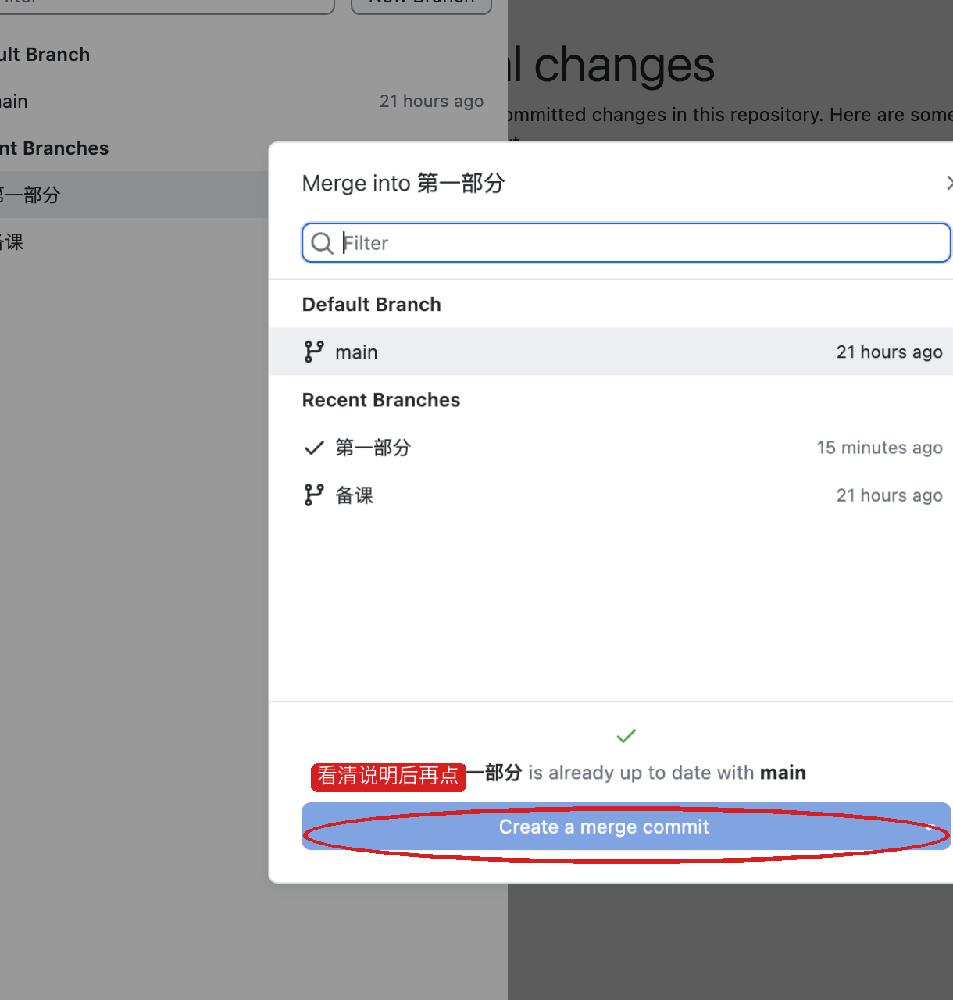

甲
MySQL 8
MySQL 8
乙
MySQL 5.7
MySQL 5.7
丙
没装数据库
没装数据库
项目相同，机器不同，结果对不上。
顺序是：先讲 Git，用 GitHub Desktop 克隆到本地并看懂本地仓库，再把项目跑起来，最后讲 fetch、pull、push、merge、rebase。绿字是要对照的结果。先选你的系统，后面的菜单和命令会跟着变。
这一节先不安装。Git 是管「代码的历史」的。GitHub Desktop 是它的窗口，不是另一种 Git。
项目文件会改很多遍。没有历史时，只能靠复制文件夹：项目-最终、项目-最终2、项目-真的最终。两个人同时改同一个文件，后来的人会把前面的人盖掉。看不出谁在什么时候改了哪一行。
Git 把每一次完成的修改记成一条提交。提交堆在一条分支上。远程仓库是放在网上的那一份，本地仓库是你电脑里的那一份。两边不会自动变成一样，要靠后面的 fetch、pull、push。
Git 只记录文件的变化，不负责把 Java 跑起来。你在本地改文件、做提交，历史先存在自己电脑上。网上的仓库叫远程，这份课堂仓库的远程在 Gitee，不在 GitHub。GitHub Desktop 这个软件可以管理任何 Git 地址，所以用它来克隆 Gitee，不要求先注册 GitHub。
作业一要求有个人 Gitee。项目要先到本地，才能往下装 Docker、把系统跑起来。所以顺序是：先拿到本地仓库，再跑项目，最后把五个同步动作用窗口点清楚。
窗口里的按钮两边一样。不一样的是安装，以及菜单栏在哪里。
第一次打开如果要求登录 GitHub，选择跳过。课堂仓库不在 GitHub 上，不登录也能克隆。
克隆就是把远程仓库完整抄到你的电脑，包括历史和分支。地址用 HTTPS，这个地址可以匿名读取，写讲义时确认过远程上有 main、备课、第一部分 三个分支。
https://gitee.com/dingsaier/warehouse-backend.git
warehouse-backend。main。点 Current Branch，选「第一部分」。History 里能看到已经有的提交。这就是本地仓库，文件已经在你刚选的文件夹里。下面的图是在 Mac 上打开 GitHub Desktop 3.6.6 后截的，红圈是要点的位置。Windows 上这些按钮的英文一样。差别只在菜单：Mac 在屏幕最上方，Windows 在软件窗口的顶上。


https://gitee.com/dingsaier/warehouse-backend.git。Local Path 选你自己的文件夹，图里的 Desktop 只是教师电脑上的例子。最后点 Clone。


不要在「第一部分」上交作业式的修改。点 Current Branch，New Branch，名字用 practice-你的学号，基于「第一部分」，创建。
在仓库文件夹里新建一个文本文件 我的练习.txt，里面写你的名字。回到 GitHub Desktop，左侧 Changes 里会出现这个文件。勾上它，Summary 写成「记下我的名字」，点 Commit。
跑项目之前，Current Branch 再选回「第一部分」。练习分支留着，后面讲 merge 和 rebase 用。
这一节不安装，也不敲命令。讲完再往下。
同一份 Java 项目，换一台电脑就可能跑不起来。甲的电脑装了 MySQL 8，乙的还是 5.7，丙的 3306 端口被别的软件占着，丁根本没装数据库。代码没变，环境变了。所以常听到一句靠不住的话：在我电脑上是好的。
后面这门课还要把同一份东西放到 Linux 服务器上。如果每个人本机的装法都不一样，服务器上又是第三种装法，出了错就分不清是程序写错了，还是这台机器和那台机器不一样。
项目相同，机器不同，结果对不上。
Windows、Mac、以后的 Linux，启动的是同一份环境。
Docker 把「程序」和「它要的环境」打在一起，然后在你的电脑里单独跑起来。你的 Windows 或 Mac 不用真的装一套 MySQL。你装的是 Docker。MySQL 跑在 Docker 里面，版本、端口、密码都写在一份文件里。
它不是一种编程语言，也不代替 Java。Java 还是我们写的。Docker 负责把 Java 要连的数据库，以及后面要加的 Redis、文件服务，用同一种办法启动。
作业一就要能用 Compose 把 MySQL 拉起来，并且能登录。第 16 周要把同一份 Compose 放到 Linux 上。中间还要加 Redis 和 MinIO。如果这周不先把 Docker 讲清楚，后面每加一个软件都要再教一遍「怎么在 Windows 上装、怎么在 Mac 上装」。
所以这周的顺序是：先知道它解决什么问题，再安装 Docker，再只用它启动 MySQL 和一个看数据库的网页。我们自己的 Java 程序，第二次课再放进去。
词是后起的名字。先记住它们各自指什么，安装的时候还会再见到。
mysql:8 和 adminer:4。可以把它想成安装包。docker-compose.dev.yml。浏览器地址栏里的 localhost 是你的电脑。MySQL 和看数据库的网页各自跑在一个容器里。网页如果要连数据库，却填写 localhost，它找的是自己那个容器，不是旁边的 MySQL。第一次课会亲手做一次这个错误。先看下面两行，知道差别在哪。
系统用页顶的 macOS / Windows 切换。装好之后，两边都要看到 Client 和 Server。
Docker.dmg。把 Docker 图标拖进「应用程序」文件夹。Terminal，打开「终端」。Docker Desktop 4.88 以前的安装窗口会问 Use recommended settings。出现的话选它，并输入开机密码。4.94 这一版打开后接受协议即可，不再要密码。
wsl --install，按提示重启，再继续安装 Docker。curl，那个不是同一个程序。docker version
docker version
Client 和 Server。这台 Mac 上 Server 那一段写着 Docker Desktop 4.94.0。你的版本号可以不同。只有 Client、没有 Server，就是 Docker Desktop 还没准备好，回到上一步等它启动完。先不要管应用。仓库根目录里要能看到 docker-compose.dev.yml 和 pom.xml。下面的命令都在这个目录执行。
cd 你的仓库路径
ls（Mac）或 dir（Windows）时，列表里有 docker-compose.dev.yml。用编辑器打开 docker-compose.dev.yml。今天只看 mysql 和 adminer。下面的 app 第二次课再看。
| 文件里的字 | 讲的时候说什么 |
|---|---|
image: mysql:8 | 用 MySQL 8 这个镜像 |
container_name: pro-skill-mysql | 容器的名字 |
"3306:3306" | 冒号左边是你电脑的端口，右边是容器里面的端口 |
"8081:8080" | Adminer 在容器里是 8080，浏览器要开 8081 |
MYSQL_ROOT_PASSWORD: root | 数据库密码 |
MYSQL_DATABASE: pro_skill | 自动建这个库 |
ADMINER_DEFAULT_SERVER: mysql | 默认要连的主机名，是服务名 mysql |
volumes | 表存在数据卷里，容器停了数据还在 |
docker compose -f docker-compose.dev.yml up -d mysql adminer
第一次会下载镜像。屏幕停在 Downloading 或 Pulling 时不要关窗口。这台电脑上镜像本来就有，所以很快结束。你们第一次要等它下完。
docker compose -f docker-compose.dev.yml ps
pro-skill-mysql 的状态里有 healthy，pro-skill-adminer 的状态是 Up，端口是 0.0.0.0:8081->8080。如果 MySQL 还是 health: starting，等十几秒再执行一次 ps。列表里如果已经有 pro-skill-app，先执行 docker compose -f docker-compose.dev.yml stop app。第一次课不用它。浏览器打开 http://localhost:8081。页面是中文时，格子名是：系统、服务器、用户名、密码、数据库。服务器一栏可能已经写着 mysql，那是文件里的默认值。先把它改成 localhost。
点「登录」。
这行红字是这台电脑上实际点出来的。MySQL 容器当时仍是 healthy。失败只出在服务器这一格：Adminer 在自己的容器里，localhost 指的是它自己。
服务器改成 mysql，其他四格不变，再登录。
flyway_schema_history、tb_user（大约 4 行）、warehouse（大约 3 行）、warehouse_location（大约 3 行）、warehouse_zone（大约 2 行）。点 tb_user。如果先进去的是表结构，再点上面的「选择数据」。
admin，显示名称是系统管理员，角色是 ADMIN。另外还有 wh_manager、operator、business。再把服务器改回 localhost，又出现那行红字。改回 mysql，又能看见表。
浏览器地址栏的 localhost:8081 是对的，那是网页从容器映射到你的电脑。页面里要填的数据库主机，是容器之间的名字 mysql。这两个 localhost 不是同一个地方。
docker compose -f docker-compose.dev.yml stop docker compose -f docker-compose.dev.yml start
mysql 登录，tb_user 里的 admin 还在。数据在数据卷里，不在被停掉的那个容器里面。这次课不要执行 docker compose down -v。-v 会把数据卷删掉。
先确认 MySQL 和 Adminer 还在。不在就执行 start。
docker compose -f docker-compose.dev.yml ps
build: . 表示用当前目录的 Dockerfile，把我们的程序打成镜像。container_name 是 pro-skill-app。端口是 8080:8080。环境变量 APP_LESSON_DATASOURCE_HOST 是程序去连数据库时用的主机名。没另外设置时，这个值是 mysql。
另一个文件 docker-compose.localhost.yml 会把这个值改成 localhost。这和第一次课把服务器填错是同一件事。
docker compose -f docker-compose.dev.yml -f docker-compose.localhost.yml up -d --build --force-recreate app
第一次会构建镜像。这台 Mac 上这一步大约五分钟，屏幕长时间停在 Downloading 是正常的。等到命令自己结束，再看状态和日志。
docker compose -f docker-compose.dev.yml ps
docker logs --tail 30 pro-skill-app
docker inspect pro-skill-app --format '{{range .Config.Env}}{{println .}}{{end}}' | grep APP_LESSON
docker compose -f docker-compose.dev.yml ps
docker logs --tail 30 pro-skill-app
docker inspect pro-skill-app --format '{{range .Config.Env}}{{println .}}{{end}}' | findstr APP_LESSON
pro-skill-mysql 仍是 healthy。pro-skill-app 的状态是 Restarting，不是 healthy。日志里有 Communications link failure，最后是 Connection refused。环境变量是：APP_LESSON_DATASOURCE_HOST=localhost APP_LESSON_TRACE_ID=off
docker compose -f docker-compose.dev.yml up -d --force-recreate app
这一条不用 --build。等十几秒，直到 ps 里应用是 healthy。这台电脑上大约十秒。
curl -s http://localhost:8080/actuator/health
curl.exe -s http://localhost:8080/actuator/health
"status":"UP"。这台电脑上完整内容是 {"groups":["liveness","readiness"],"status":"UP"}。这里的 localhost:8080 是你的浏览器。上一步环境变量里的 localhost 是容器内部。改掉的是容器内部那个。curl -s -X POST http://localhost:8080/auth/login \
-H 'Content-Type: application/json' \
-d '{"username":"admin","password":"Admin@123"}'
curl.exe -s -X POST http://localhost:8080/auth/login -H "Content-Type: application/json" -d "{\"username\":\"admin\",\"password\":\"Admin@123\"}"
token，username 是 admin，role 是 ADMIN。也可以打开 http://localhost:8080/swagger-ui.html，用同一个账号登录。现在 APP_LESSON_TRACE_ID 是 off。日志每一行有一对中括号，用来放这次请求的编号。关闭时中括号是空的。
curl -s -D - -X POST http://localhost:8080/auth/login \
-H 'Content-Type: application/json' \
-d '{"username":"admin","password":"Admin@123"}'
curl.exe -s -D - -X POST http://localhost:8080/auth/login -H "Content-Type: application/json" -d "{\"username\":\"admin\",\"password\":\"Admin@123\"}"
X-Trace-Id。再执行 docker logs --tail 40 pro-skill-app，登录那几行的中括号是空的，写成 []。两个同学同时登录时，分不出哪一行属于谁。APP_LESSON_TRACE_ID=on docker compose -f docker-compose.dev.yml up -d --force-recreate app
$env:APP_LESSON_TRACE_ID="on"; docker compose -f docker-compose.dev.yml up -d --force-recreate app
等应用再次变成 healthy。然后带上一个指定的编号。
curl -s -D - -X POST http://localhost:8080/auth/login \
-H 'Content-Type: application/json' \
-H 'X-Trace-Id: lesson-001' \
-d '{"username":"admin","password":"Admin@123"}'
curl.exe -s -D - -X POST http://localhost:8080/auth/login -H "Content-Type: application/json" -H "X-Trace-Id: lesson-001" -d "{\"username\":\"admin\",\"password\":\"Admin@123\"}"
X-Trace-Id: lesson-001。日志里同一次登录的行都带这个编号，例如：[lesson-001] INFO c.e.p.observability.TraceIdFilter - request POST /auth/login
后面查用户的 SQL 也在同一个中括号里。两个终端都不带这个头、再同时登录，会各自得到一个不同的编号。
APP_LESSON_TRACE_ID=off docker compose -f docker-compose.dev.yml up -d --force-recreate app
$env:APP_LESSON_TRACE_ID="off"; docker compose -f docker-compose.dev.yml up -d --force-recreate app
X-Trace-Id。然后把第 11 步的打开命令再执行一次，用 lesson-001 登录，编号又回到响应头和日志里。项目已经能在本地跑起来之后，再讲这五个。按钮在仓库窗口上方。Mac 的 Branch 菜单在屏幕最上方，Windows 的 Branch 菜单在窗口顶上，字是一样的。
问远程：你有没有新提交？只把消息拿下来，不改你正在看的文件。
在 fetch 之后，把远程那些新提交合进你当前的分支。你的文件会变。
把你本地有、远程还没有的提交送上去。没有新提交时，这个按钮不会出现。


Current Branch 停在「第一部分」。点 Fetch origin。
切回 practice-你的学号。如果 History 里有还没送出的提交，上方会出现 Push origin。课堂这个 Gitee 仓库是教师的，你们没有写入权限，点下去会被拒绝。这是正常的。
merge 是把另一条分支上的提交并进你当前这条分支，两条线都留着，必要时多出一个合并提交。
在本地做，不要推送。Current Branch 放在「第一部分」。New Branch，名字 practice-line-a。新建文件 a.txt，内容写 A，Commit。再从「第一部分」拉出 practice-line-b，新建 b.txt，内容写 B，Commit。现在停在 line-b。打开菜单 Branch，点 Merge into Current Branch，选 practice-line-a。窗口下方如果写的是可以合并，再点 Create a merge commit。如果写着 already up to date，说明两条分支没有不同的修改，先不要点。
a.txt 和 b.txt。如果 GitHub Desktop 在 Merge 按钮上方写出有冲突，先不要点，说明两个分支改了同一处，这节课先换成两个不同的文件再做一次。rebase 是把你当前分支上的提交挪到另一条分支的最新位置后面，历史变成一条直线。它会改写当前分支上那些提交。别人正在用的分支不要 rebase。做完之后如果要推送，按钮会变成 Force push origin，课堂仓库上不要点。
Current Branch 停在 practice-line-b。菜单 Branch，点 Rebase Current Branch。选「第一部分」，点 Rebase，再点 Begin Rebase。
五个词可以收成三句。fetch 只看远程有没有新东西。pull 把远程的新东西拿进本地，push 把本地的新东西送到远程。merge 保留分叉并汇合，rebase 把分叉拉直。日常更新课堂代码用 Fetch origin，需要时再 Pull origin。自己的作业仓库才 Push origin。
docker version 有 Client 和 Servermysql 能看见 tb_user 里的 admin"status":"UP"，账号 admin / Admin@123 能登录localhost 不是旁边那个容器APP_LESSON_TRACE_ID=on 时，一次请求的日志带同一个 X-Trace-Id「你应该看到」里的红字、表、健康检查、登录结果和 lesson-001 日志，是 2026-10-09 在 macOS、Docker Desktop 4.94 上按这个顺序跑出来的。Windows 的安装点击来自 Docker 官方安装页。装好之后，除了讲义里单独写出的 PowerShell 命令，其余命令相同。